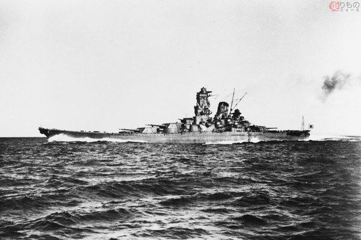
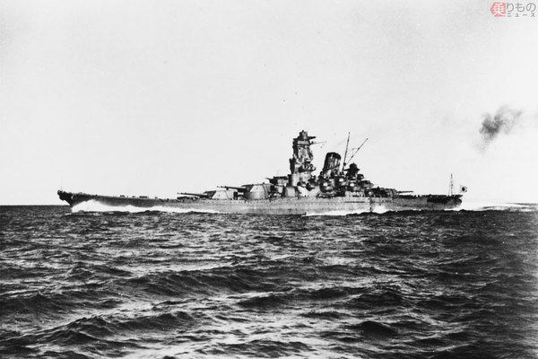

戦艦 大和
かつて世界最強とされた戦艦 大和は沖縄の盾になるために沖縄に向かっていたが道中にアメリカからの奇襲に遭い轟沈 
大和（やまと）[6]は、大日本帝国海軍が建造した大和型戦艦の1番艦[7]。2番艦の武蔵とともに、史上最大にして唯一46センチ砲を搭載した超弩級戦艦である。建造当初は、世界最大かつ最強の戦艦だった。呉海軍工廠で建造。
現在大和について詳しく知るには広島の呉にある大和ミュージアムがおすすめ。
かつて世界最強とされた戦艦 大和は沖縄の盾になるために沖縄に向かっていたが道中にアメリカからの奇襲に遭い轟沈 
大和（やまと）[6]は、大日本帝国海軍が建造した大和型戦艦の1番艦[7]。2番艦の武蔵とともに、史上最大にして唯一46センチ砲を搭載した超弩級戦艦である。建造当初は、世界最大かつ最強の戦艦だった。呉海軍工廠で建造。
現在大和について詳しく知るには広島の呉にある大和ミュージアムがおすすめ。